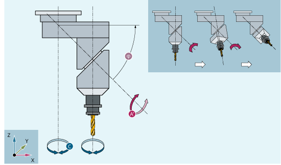
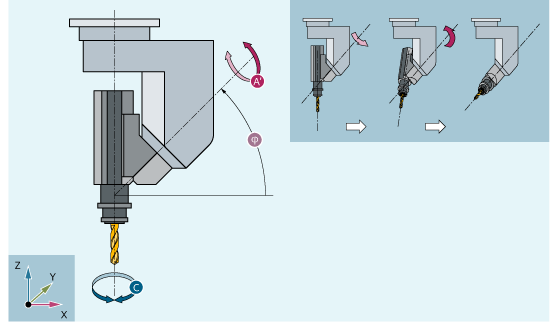
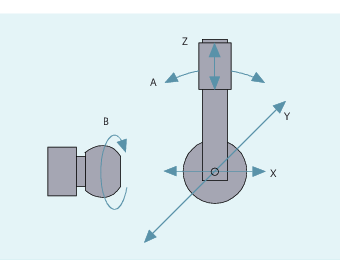

To obtain optimum cutting conditions when machining surfaces with a three-dimensional curve, it must be possible to vary the setting angle of the tool.

The machine design to achieve this is stored in the axis data.
5-axis transformation
Cardanic tool head
Three linear axes (X, Y, Z) and two orientation axes (C, A) define the setting angle and the operating point of the tool here. One of the two orientation axes is created as an inclined axis, in our example A' - in many cases, placed at 45°.
Cardanic tool head variant 1
In the examples shown here, you can see the arrangements as illustrated by the CA machine kinematics with the Cardanic tool head!
The axis sequence of the orientation axes and the orientation direction of the tool can be set up using the machine data as appropriate for the machine kinematics (→ machine manufacturer).
In this example, A' lies below the angle φ to the X axis.
The following possible relations are generally valid:
A' lies below the angle φ to the | X axis |
B' lies below the angle φ to the | Y axis |
C' lies below the angle φ to the | Z axis |
Angle φ can be configured in the range 0° to +89° using machine data.
With swiveling linear axis
This is an arrangement with a moving workpiece and a moving tool. The kinematics consists of three linear axes (X, Y, Z) and two orthogonally arranged axes of rotation. The first rotary axis is moved, for example, over a compound slide of two linear axes, the tool standing parallel to the third linear axis. The second rotary axis rotates the workpiece. The third linear axis (swivel axis) lies in the compound slide plane.
The axis sequence of the rotary axes and the orientation direction of the tool can be set up using the machine data as appropriate for the machine kinematics.
There are the following possible relationships:
Axes: | Axis sequences: |
|---|---|
1st rotary axis | A A B B C C |
2nd rotary axis | B C A C A B |
Swiveled linear axis | Z Y Z X Y X |
Additional information about configurable axis sequences for the orientation direction of the tool, see Function Manual Transformations.